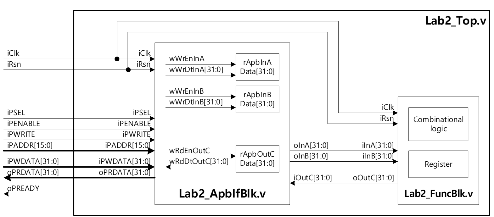
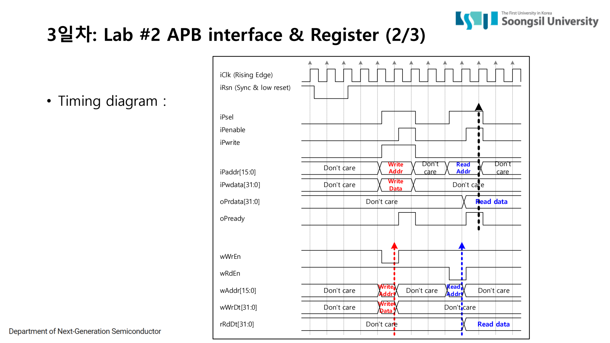
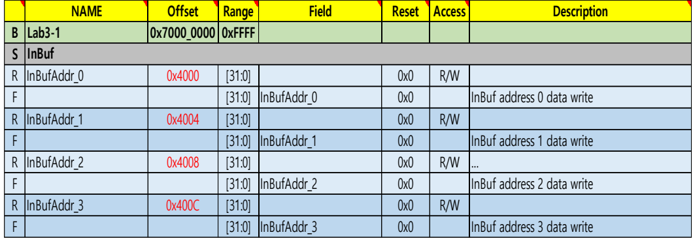
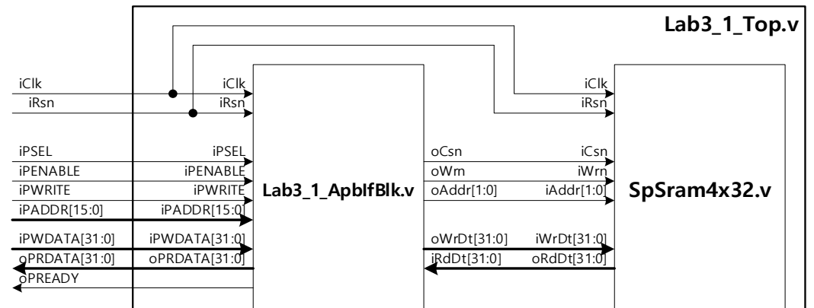
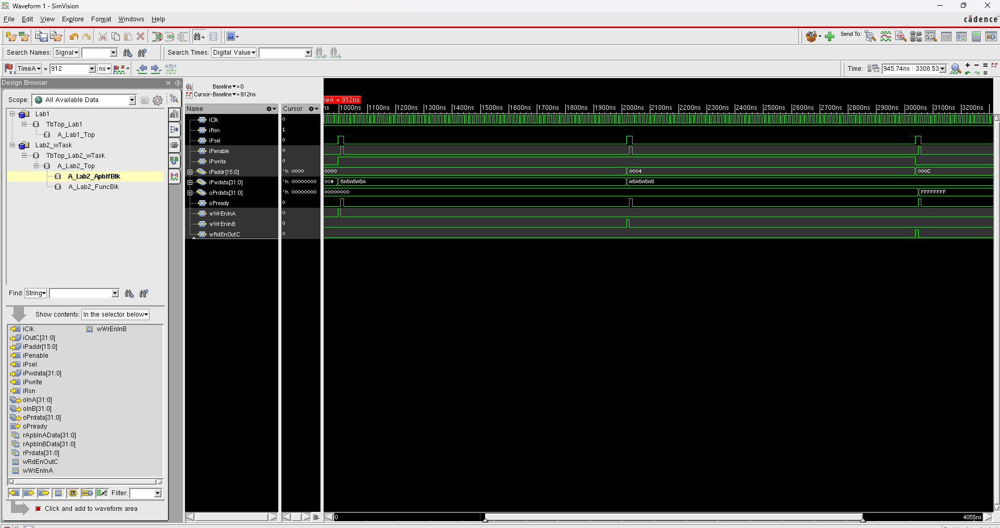
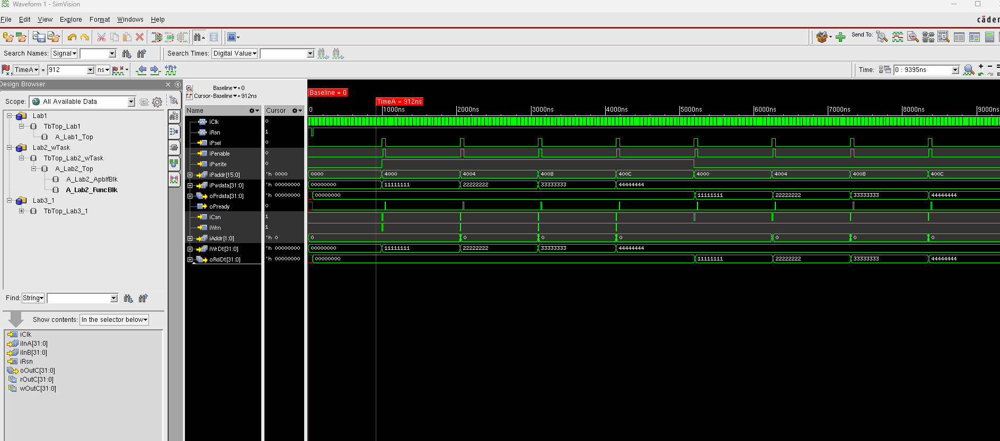

1. APB Control Bus
이 페이지는 APB를 “주변장치용 간단한 버스”라고만 끝내지 않고, 실제 SoC에서 bus가 무엇을 연결하는지, APB transfer가 어떤 규칙으로 진행되는지, 그리고 숭실대 Lab RTL에서 그 규칙을 어떤 조건식과 register map으로 구현했는지까지 정리한 위키형 노트입니다.
1.1 실제 버스란 무엇인가
디지털 시스템에서 bus는 여러 하드웨어 블록이 데이터를 주고받기 위해 공유하는 신호 묶음이다. 회로도 관점에서는 주소선, 데이터선, 제어선, 응답선이 모인 연결 구조이고,
RTL 관점에서는 PADDR, PWDATA, PWRITE, PREADY 같은 wire와 reg의 집합이다.
합성 이후 실제 칩에서는 이 신호들이 금속 배선과 mux, decoder, register slice, interconnect logic으로 구현된다.
bus에서 중요한 것은 단순히 선이 많다는 점이 아니라 “누가, 어느 주소에, 어떤 방향으로, 언제 전송이 완료됐다고 볼 것인가”를 정하는 규칙이다. 이 규칙을 bus protocol이라고 부른다. APB, AHB, AXI는 모두 AMBA 계열 bus protocol이지만, 목표가 다르다. APB는 단순 register 제어, AHB는 더 빠른 내부 데이터 이동, AXI는 고성능 channel 기반 transaction에 초점을 둔다.
Master
전송을 시작하는 쪽이다. CPU, DMA, testbench의 AXI master model처럼 주소와 read/write 요청을 낸다.
Slave
요청을 받는 쪽이다. register block, SRAM, UART, I2C controller처럼 특정 주소 범위에 반응한다.
Address map
어떤 주소 범위가 어떤 하드웨어 블록에 연결되는지 정한 표다. SoC에서 software와 hardware가 만나는 약속이다.
Register map
선택된 slave 내부에서 각 offset이 어떤 register field를 의미하는지 정한 표다. RTL에서는 주소 decode 조건으로 구현된다.
1.2 APB는 어떤 bus인가
APB(Advanced Peripheral Bus)는 고속 데이터 전송보다 주변장치 register 제어에 맞춘 단순한 bus다. 이미지 프레임 전체를 옮기는 경로라기보다, 센서 mode 설정, interrupt mask 설정, status bit 확인, start command write 같은 제어 작업에 어울린다. 그래서 APB에는 AXI처럼 여러 독립 channel이나 outstanding transaction이 없다. 대신 setup phase와 enable phase라는 두 단계로 transfer를 명확하게 닫는다.
Lab2에서는 APB register access를 가장 작은 형태로 다뤘다. 입력 register A/B를 write하고 출력 register C를 read하는 구조다. Lab3에서는 같은 APB 접근을 SRAM으로 확장했고, Lab4에서는 interrupt 관련 register까지 붙였다. 즉 APB는 “register 하나 읽고 쓰는 버스”에서 시작하지만, 실제로는 하드웨어 연산 시작, buffer 접근, interrupt 상태 관리까지 담당할 수 있다.

| 신호 | 방향 | 의미 | Lab에서 본 포인트 |
|---|---|---|---|
| PSEL | master → slave | 이번 transfer에서 해당 APB slave가 선택됐다는 뜻 | 주소 decode 이후 선택된 slave만 반응해야 한다. |
| PENABLE | master → slave | setup 다음 enable phase에 들어갔다는 뜻 | write commit/read return은 enable phase 기준으로 봐야 한다. |
| PWRITE | master → slave | 1이면 write, 0이면 read | write enable과 read enable을 나누는 기준이다. |
| PADDR | master → slave | 접근할 register 또는 memory offset | RTL에서는 특정 주소와 비교해 register를 선택한다. |
| PWDATA | master → slave | write할 32-bit data | Lab2에서는 입력 A/B register 값으로 저장된다. |
| PRDATA | slave → master | read 결과 data | 주소에 따라 출력 register 또는 SRAM read data를 mux로 반환한다. |
| PREADY | slave → master | transfer 완료 여부 | simple Lab에서는 즉시 ready, 최종 project slave에서는 enable phase에서 1-cycle pulse로 만들었다. |
1.3 APB transfer 순서
APB transfer는 항상 “setup → enable → 완료” 순서로 읽는다. setup phase에서 주소와 방향, write data를 준비하고, enable phase에서 slave가 실제 write 또는 read를 처리한다. slave가 PREADY를 1로 올리면 transfer가 끝난다.
- Idle: transfer가 없으면 PSEL=0이다. slave는 내부 register를 유지한다.
- Setup phase: PSEL=1, PENABLE=0. master가 PADDR, PWRITE, PWDATA를 안정시킨다.
- Enable phase: PSEL=1, PENABLE=1. slave는 write라면 register에 값을 저장하고, read라면 PRDATA를 준비한다.
- Ready: PREADY=1이면 해당 transfer가 완료된다. PREADY=0이면 enable phase가 유지되어 wait가 걸린다.

1.4 Lab2~4 RTL에서는 어떻게 구현했는가
Lab2의 APB interface block은 APB 신호를 내부 register 제어 신호로 바꾸는 역할을 한다.
핵심은 주소와 phase 조건을 동시에 만족할 때만 write/read enable을 만드는 것이다.
강의자료는 setup/enable phase를 기준으로 transfer를 설명하고, 실습 RTL은 setup 조건(PSEL=1, PENABLE=0)에서 내부 write/read enable을 만든 뒤
enable phase(PSEL=1, PENABLE=1)에서 PREADY를 올려 transfer 완료를 표시한다.
즉 “주소를 해석하는 시점”과 “bus transfer가 완료되는 시점”을 나누어 구현한 구조다.
assign wWrEnInA = ((iPsel == 1'b1) & (iPenable == 1'b0)
& (iPwrite == 1'b1) & (iPaddr == 16'h0000)) ? 1'b1 : 1'b0;
assign wWrEnInB = ((iPsel == 1'b1) & (iPenable == 1'b0)
& (iPwrite == 1'b1) & (iPaddr == 16'h0004)) ? 1'b1 : 1'b0;
assign oPready = (iPsel == 1'b1 && iPenable == 1'b1) ? 1'b1 : 1'b0;
Lab3-1에서는 APB 접근이 SRAM read/write로 확장된다. 주소 0x4000, 0x4004, 0x4008, 0x400C가 4-depth SRAM entry로 대응되고,
RTL에서는 PADDR[3:2]를 SRAM index로 사용한다. 이 구조를 보면 memory-mapped access가 무엇인지 분명해진다.
software 입장에서는 주소에 write/read할 뿐이지만, hardware 내부에서는 그 주소가 SRAM chip select, write enable, address, write data로 바뀐다.


assign wWrEn = ((iPsel == 1'b1) & (iPenable == 1'b0) & (iPwrite == 1'b1)
& (iPaddr == 16'h4000 || iPaddr == 16'h4004
|| iPaddr == 16'h4008
|| iPaddr == 16'h400C)) ? 1'b1 : 1'b0;
assign wWrAddr = iPaddr[3:2]; // byte address -> word address
assign oCsn = (wWrEn || wRdEn) ? 1'b0 : 1'b1;
assign oWrn = (wWrEn && !wRdEn) ? 1'b0 : 1'b1;Lab3-2에서는 APB가 단순 register access를 넘어 하드웨어 연산 command interface가 된다. 0x0000 start command로 endian conversion을 시작하고, 0x0004 packet word size로 처리할 word 수를 지정한다. 입력 data는 InBuf 영역에 write하고, 변환 결과는 OutBuf 영역에서 read한다. Lab4는 여기에 interrupt enable, pending, mask 개념을 붙여 hardware가 작업 완료를 software에게 알리는 흐름까지 확장한다.
assign wWrEn_InBuf = (wWrEn && iPaddr[15:11] == 5'b01000) ? 1'b1 : 1'b0;
assign wWrAddr_InBuf = iPaddr[10:2];
assign wStDtCp = (wWrEn && iPaddr[15:0] == 16'h0000
&& iPwdata[0] == 1'b1) ? 1'b1 : 1'b0;
assign wRdEn_OutBuf = (wRdEn && iPaddr[15:11] == 5'b01100) ? 1'b1 : 1'b0;
assign wRdAddr_OutBuf = iPaddr[10:2];

1.5 파형에서 무엇을 검증했는가
APB 검증에서 본 것은 “값이 맞다” 하나가 아니다. PSEL과 PENABLE의 순서, 주소 decode 결과, write enable이 enable phase에서만 발생하는지, read data가 PRDATA로 올바르게 mux되는지, SRAM 접근에서는 APB 주소가 SRAM address로 제대로 바뀌는지를 확인했다.

